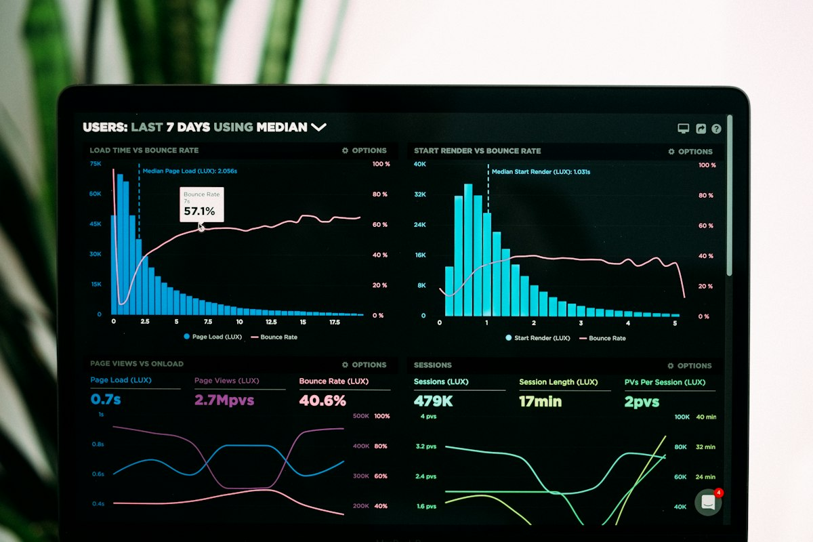

Binance P2P y Zinli en Venezuela: Guía Completa para Recargar y Operar (2026)
Actualizado en septiembre de 2026 · 25 min de lectura
Contenido de la guía
- 1. Introducción: Por qué necesitas saber esto
- 2. ¿Qué es Binance P2P y cómo funciona?
- 3. Crear tu cuenta en Binance y verificarla
- 4. Tu primer trade: comprar USDT con bolívares
- 5. Vender y comprar USDT: cuándo y cómo
- 6. Recargar Zinli desde Binance paso a paso
- 7. Comparativa de billeteras digitales
- 8. Comisiones y costos ocultos
- 9. Seguridad antibloqueo para el P2P
- 10. Errores comunes y cómo evitarlos
- 11. Preguntas frecuentes
Introducción: Por qué necesitas saber esto en 2026
En Venezuela, el acceso directo a tarjetas de crédito internacionales sigue siendo un lujo que pocos pueden permitirse. Los bancos tradicionales exigen históricos crediticios, ingresos demostrables en divisas y un proceso de aprobación que puede tardar meses. Pero la realidad del día a día obliga a pagar plataformas como Netflix, Spotify, Disney+, Amazon, AliExpress, Shein o incluso servicios de software como Canva Pro y herramientas de trabajo remoto. Todo eso se paga en dólares, y la mayoría de las veces requiere una tarjeta internacional.

Aquí es donde las billeteras digitales como Zinli, Meru y otras entran en escena. Estas aplicaciones te permiten tener una tarjeta virtual Visa o Mastercard en minutos, sin pasar por un banco, sin papeleos y sin solicitar un crédito. Pero para que esas billeteras funcionen, necesitas alimentarlas con dólares. Y en Venezuela, la forma más común, económica y rápida de obtener esos dólares es a través de Binance P2P.
Binance P2P es un marketplace donde personas reales compran y venden criptomonedas entre sí, sin intermediarios bancarios. Tú le pagas al vendedor en bolívares mediante pago móvil o transferencia, y él te envía USDT (un dólar digital) a tu billetera de Binance. Desde ahí, puedes mover esos dólares a Zinli o cualquier otra plataforma. El proceso completo puede durar entre 5 y 20 minutos, y el costo total es significativamente menor que ir a una casa de cambio física.
Esta guía está escrita para alguien que nunca ha usado Binance P2P o Zinli. Explica todo desde cero: qué es cada plataforma, cómo crear una cuenta, cómo verificar tu identidad, cuál es tu primer trade, cómo recargar Zinli, cuánto cuesta cada paso, qué errores debes evitar y cómo proteger tu dinero de posibles bloqueos bancarios. Si sigues esta guía al pie de la letra, en menos de una hora tendrás tu billetera digital lista para usar.
¿Qué es Binance P2P y cómo funciona?
Binance es el exchange de criptomonedas más grande del mundo por volumen de operaciones. Pero dentro de Binance, hay un servicio especial llamado P2P (peer-to-peer, o persona a persona) que permite comprar y vender criptomonedas directamente con otra persona, usando métodos de pago locales. En Venezuela, esto significa que puedes comprar USDT pagando con bolívares a través de pago móvil o transferencia bancaria.
La diferencia con una casa de cambio tradicional es que Binance actúa como intermediario de confianza. Cuando tú compras USDT, el vendedor no recibe tus bolívares hasta que tú confirmas que recibiste las criptomonedas. Y cuando vendes, el comprador no recibe tus USDT hasta que tú confirmas que te pagaron. Este mecanismo de custodia protege a ambas partes.
Cómo funciona el proceso de compra
Imagina que quieres comprar $50 USD en USDT. Abres la sección P2P de Binance, seleccionas "Comprar" y filtras por "USDT" y el método de pago que prefieras (pago móvil, transferencia, etc.). Binance te muestra una lista de vendedores (cajeros) con sus precios, límites y reputaciones. Eliges uno, creas la orden, y la app te da los datos del vendedor (número de teléfono, cédula o cuenta bancaria). Le haces el pago, subes el comprobante, y esperas a que el cajero libere los USDT a tu billetera.
El cajero tiene un tiempo límite (generalmente entre 15 y 30 minutos) para liberar los USDT. Si no lo hace, puedes abrir una disputa y el equipo de Binance intervendrá. En la práctica, la mayoría de las operaciones se resuelven en menos de 5 minutos.
¿Qué es USDT y por qué se usa?
USDT (Tether) es una criptomoneda estable (stablecoin) respaldada por dólares reales. Cada USDT está diseñado para valer exactamente $1 USD. En el contexto venezolano, USDT funciona como un puente entre los bolívares y las billeteras digitales. No es una inversión ni una especulación: es simplemente una forma de mover dólares de un punto a otro de forma rápida y sin pasar por el sistema bancario tradicional.
Crear tu cuenta en Binance y verificarla
El primer paso es crear una cuenta en Binance. Esto lo puedes hacer desde la aplicación móvil (disponible en Google Play y App Store) o desde el sitio web. Te recomiendo usar la aplicación para tener mejor control de tus operaciones P2P, ya que muchas funciones están optimizadas para móvil.
Paso 1: Descarga e instalación
Busca "Binance" en Google Play o App Store. Asegúrate de descargar la app oficial (el desarrollador debe decir "Binance"). Nunca descargues APKs de terceros ni uses enlaces de Telegram o WhatsApp, ya que podrían ser versiones modificadas con malware que roba tus credenciales.
Paso 2: Registro
Abre la app y selecciona "Registrarse". Necesitas un correo electrónico válido y una contraseña segura (mínimo 8 caracteres, con mayúsculas, minúsculas, números y un símbolo). Binance te enviará un código de verificación por correo. Introdúcelo y tu cuenta estará creada.
Paso 3: Verificación de identidad (KYC)
Sin verificación KYC, no podrás operar en P2P. Ve a "Identificación" en el menú de la app. Necesitarás:
- Documento de identidad: cédula venezolana o pasaporte vigente. Toma una foto clara, sin reflejos y con todos los datos legibles.
- Selfie: la app te pedirá que hagas una selfie para verificar que eres la misma persona del documento. Usa buena luz y asegúrate de que tu rostro sea visible completamente.
- Verificación facial: en algunos casos, Binance te pedirá que muevas la cabeza en distintas direcciones para confirmar que eres una persona real y no una foto estática.
La verificación generalmente se aprueba en menos de 24 horas. Recibirás una notificación cuando esté lista. Una vez aprobada, tu nivel de verificación te permitirá operar en P2P con límites adecuados para uso personal.
Tu primer trade: comprar USDT con bolívares
Con tu cuenta verificada, estás listo para tu primera operación. Aquí te explico el proceso completo para comprar USDT con bolívares por primera vez.
Paso 1: Entra a P2P
En la app de Binance, busca "P2P" en el menú principal. Verás dos pestañas: "Comprar" y "Vender". Asegúrate de estar en "Comprar". Selecciona "USDT" como la criptomoneda que quieres comprar.
Paso 2: Filtra por método de pago
Toca el ícono de filtro y selecciona el método de pago que vas a usar. Los más comunes en Venezuela son:
- Pago móvil (Banesco, Banco de Venezuela, Mercantil, etc.): es el método más rápido y popular. Solo necesitas el número de teléfono del cajero y su cédula.
- Transferencia bancaria: más lento pero útil para montos grandes. El cajero te da los datos de su cuenta bancaria.
- Zelle: si tienes acceso a una cuenta Zelle, algunos cajeros lo aceptan, aunque es menos común.
Paso 3: Elige un cajero
No todos los cajeros son iguales. Para elegir uno seguro, revisa estos indicadores:
- Reputación: busca cajeros con más de 100 órdenes completadas y una tasa de éxito superior al 95%.
- Verificación dorada: los cajeros con el sello dorado de Binance son los más confiables.
- Límites: asegúrate de que el monto mínimo y máximo del cajero coincida con lo que quieres comprar. Si quieres comprar $20, no elijas un cajero cuyo mínimo sea de $100.
- Precio: compara precios entre cajeros. La diferencia de algunos centavos por USDT se acumula si compras frecuentemente.
Paso 4: Crea la orden
Selecciona el cajero, ingresa el monto en bolívares que quieres gastar (o el monto en USDT que quieres recibir) y toca "Comprar USDT". Binance te mostrará el resumen de la orden: cantidad de USDT que recibirás, tasa de cambio y datos de pago del cajero. Confirma para crear la orden.
Paso 5: Realiza el pago
Abre tu app de banco y haz el pago móvil o transferencia al número de cuenta del cajero. El monto exacto debe coincidir con lo que indicó la orden. Nunca envíes un monto diferente. Al enviar el pago, toma una captura de pantalla del comprobante. Luego, vuelve a Binance y toca "Pagado" o "Confirmar pago". Esto notifica al cajero que ya le transferiste.
Paso 6: Recibe tus USDT
El cajero revisa tu pago y, si todo está correcto, libera los USDT a tu billetera de Binance. Recibirás una notificación. Ya tienes tus primeros dólares digitales en Binance. Ahora puedes usarlos para recargar Zinli o cualquier otra billetera.
Vender y comprar USDT: cuándo y cómo hacerlo
Comprar USDT es solo una parte de la ecuación. También necesitas saber cuándo y cómo venderlos, especialmente si tus gastos fluctúan y a veces necesitas bolívares de vuelta.
¿Cuándo comprar USDT?
- Cuando la tasa paralela esté favorable: si el dólar paralelo está bajo comparado con semanas anteriores, es buen momento para comprar y储备 para tus próximos gastos.
- Antes de un pago grande: si sabes que en dos semanas vence tu suscripción anual de un servicio, compra los USDT ahora para evitar sorpresas.
- Cuando recibas ingresos en bolívares: si acaban de pagarte y el dólar está estable, convierte una parte a USDT para proteger tu poder adquisitivo.
¿Cuándo vender USDT?
- Cuando necesites bolívares urgentemente: para pagar un servicio local, una deuda o una compra que solo acepta bolívares.
- Cuando el dólar suba: si compraste a $4.20 y ahora está a $4.50, vender tus USDT te da una ganancia en bolívares.
- Cuando acumules exceso: si tienes más USDT de los que necesitas para tus próximos 30 días de gastos, convierte el exceso a bolívares para no tener fondos ociosos en una billetera digital.
El proceso de venta
El proceso de vender USDT en P2P es el inverso de comprar. Vas a "P2P", seleccionas "Vender", filtras por el método de pago que quieres recibir (pago móvil, transferencia, etc.) y eliges un cajero comprador. Creas la orden, esperas a que el comprador te haga el pago, verificas que el dinero llegó a tu cuenta bancaria, y luego liberas los USDT. Nunca liberes los USDT antes de confirmar que el dinero está efectivamente en tu cuenta. Los comprobantes de pago pueden ser falsificados.
Recargar Zinli desde Binance paso a paso
Con los USDT en tu billetera de Binance, el siguiente paso es moverlos a Zinli para tener una tarjeta virtual lista para usar. Zinli es una billetera digital que te da una tarjeta Visa internacional virtual, ideal para suscripciones, compras online y pagos en el exterior.
Paso 1: Crea tu cuenta en Zinli (si no la tienes)
Descarga Zinli desde Google Play o App Store. Regístrate con tu número de teléfono y completa la verificación de identidad con tu cédula o pasaporte. La verificación puede tardar entre unas horas y un día hábil. Una vez aprobada, tu tarjeta virtual Visa estará disponible.
Paso 2: Agrega el método de pago de Zinli en Binance P2P
En Binance P2P, ve a "Perfil" > "Métodos de pago" y agrega "Zinli" como método de pago. Necesitarás el correo electrónico asociado a tu cuenta de Zinli. Este paso es necesario para que puedas recibir fondos de cajeros que operan con Zinli.
Paso 3: Vende USDT y recibe en Zinli
Ve a P2P > "Vender" > selecciona "USDT" > filtra por método de pago "Zinli". Elige un cajero que acepte Zinli como método de pago. Crea la orden con el monto que quieres transferir a Zinli. El cajero te enviará los fondos directamente a tu cuenta de Zinli. Verifica en la app de Zinli que el saldo se haya actualizado.
Alternativa: recarga directa
Algunos cajeros de Binance P2P ofrecen recarga directa a Zinli sin necesidad de vender USDT. En estos casos, simplemente les pagas en bolívares y ellos abonan el saldo en tu Zinli. Es más rápido pero generalmente tiene un spread ligeramente mayor. Compara el precio antes de elegir esta opción.
Comparativa extensa de billeteras digitales en Venezuela
No todas las billeteras digitales son iguales. Cada una se adapta a un perfil diferente de usuario. Aquí tienes una comparativa detallada de las opciones más populares en 2026:
| Aplicación | Validación | Tipo de Tarjeta | Límite Mensual | Comisión de Recarga | Ideal Para |
|---|---|---|---|---|---|
| Zinli | Cédula o Pasaporte | Visa Internacional Virtual | $500 a $1,500 máximo | Variable (1% - 3%) | Suscripciones, Amazon, AliExpress, Shein, Netflix, Spotify |
| Meru | Pasaporte Obligatorio | Mastercard Virtual | Sin límites estrictos | 1% - 2% | Freelancers, recibir pagos del exterior, ahorros en dólares |
| Binance | Cédula o Pasaporte | Billetera Cripto (sin tarjeta) | Según volumen de operación | 0% - 1% en P2P | Motor financiero: comprar, vender y proteger bolívares en USDT |
| Ubii | Cédula | Mastercard Virtual | Según nivel del usuario | Variable | Pagos locales, créditos por niveles, emprendedores |
| Airtm | Cédula o Pasaporte | Mastercard Virtual | Hasta $5,000+ | 1% - 2.5% | Freelancers internacionales, pagos de plataformas como Upwork |
Zinli es la opción más popular para el usuario promedio porque su validación es sencilla (acepta cédula) y su tarjeta Visa es aceptada en la mayoría de las plataformas internacionales. Meru es preferida por freelancers que reciben pagos de clientes en Estados Unidos o Europa, ya que su Mastercard tiene menor restricción. Binance no tiene tarjeta, pero es el motor que alimenta todas las demás billeteras: sin Binance P2P, no tendrías una forma económica de meter dólares en Zinli o Meru.
Comisiones y costos ocultos que debes conocer
Operar con Binance P2P y billeteras digitales tiene costos que no siempre son evidentes desde el principio. Conocerlos te permite calcular el costo real de cada transacción y evitar sorpresas.
Comisión de Binance P2P
Binance cobra una comisión por cada operación P2P completada. Para usuarios que compran, la comisión generalmente es del 0% (el vendedor paga la comisión). Para usuarios que venden, la comisión es del 0.1%. Sin embargo, la ganancia real del cajero está en el spread: la diferencia entre el precio al que compra y el precio al que vende. Este spread puede variar entre 0.5% y 2% según la demanda y el horario.
Comisión de la billetera destino
Cada billetera cobra su propia comisión por recibir fondos. Zinli, por ejemplo, cobra una comisión variable que depende del método de recarga. Meru cobra alrededor de 1% por recargas desde Binance P2P. Airtm cobra entre 1% y 2.5%. Estas comisiones se deducen del monto que recibes, así que si recargas $100 USD, es posible que recibas solo $97 o $98.
Spread del dólar
El spread es la diferencia entre el precio de compra y el precio de venta del USDT en P2P. Si un cajero vende USDT a $4.30 y los compra a $4.20, el spread es de $0.10 por USDT. Este spread representa el costo implícito de la operación. En horarios pico (tarde y noche), el spread tiende a ser mayor porque hay más demanda. En la mañana, suele ser menor.
Ejemplo práctico de costo total
Supongamos que quieres recargar $100 USD en Zinli. El proceso tiene estos costos:
- Spread del cajero: ~1% = $1.00
- Comisión de recarga de Zinli: ~2% = $2.00
- Costo total aproximado: $3.00
Esto significa que para tener $100 disponibles en Zinli, necesitas enviar aproximadamente $103 desde Binance. Si comparas con una casa de cambio física donde el spread puede ser del 3% al 5%, Binance P2P sigue siendo significativamente más económico.
Seguridad antibloqueo para el P2P
Operar en plataformas digitales en Venezuela requiere cierta malicia financiera. Los bancos nacionales pueden bloquear tus cuentas si detectan patrones sospechosos de movimiento. Para evitarlo, sigue estas reglas estrictamente:
🚫 Nunca uses palabras clave en los conceptos de pago
Al hacer el Pago Móvil o transferencia, jamás escribas términos como: "Binance", "USDT", "Crypto", "Zinli", "Dólares", "Bitcoin" o el seudónimo del cajero. Deja el concepto en blanco o escribe simplemente tu nombre o "Pago". Los bancos tienen sistemas de detección de palabras clave que pueden activar una revisión de tu cuenta.
👤 El titular de la cuenta bancaria debe ser el mismo
No pagues desde la cuenta bancaria de un familiar o amigo. El nombre registrado en tu banco debe coincidir perfectamente con el nombre de tu perfil de Binance. Si Binance detecta una discrepancia, puede restringir tu cuenta. Y si el banco detecta pagos que no coinciden con tu perfil, puede bloquear tu cuenta por sospecha de lavado de dinero.
✅ Comercia solo con usuarios verificados
Para transacciones grandes (mayores a $50 USD), filtra los anuncios y prioriza únicamente a cajeros con el verificado dorado o aquellos que tengan más del 95% de órdenes completadas con éxito y más de 200 operaciones. La reputación no miente.
📱 No compartas capturas de pantalla de tus operaciones
Las capturas de pantalla de tus órdenes de Binance contienen información sensible como IDs de transacción y montos. No las compartas en redes sociales ni en grupos de Telegram. Si alguien obtiene esa información, podría intentar suplantar tu identidad.
🔐 Activa la verificación en dos pasos
En Binance, ve a "Seguridad" y activa la verificación en dos pasos (2FA) con Google Authenticator o Authy. Esto protege tu cuenta incluso si alguien obtiene tu contraseña. Nunca uses SMS para 2FA porque puede ser interceptado.
Errores comunes y cómo evitarlos
Los errores más comunes al operar con Binance P2P y billeteras digitales suelen costar dinero o tiempo. Aquí los más frecuentes:
- Error 1: Enviar el monto incorrecto. Si la orden dice 430.000 Bs y tú envías 435.000 Bs, el cajero puede rechazar el pago o crear una disputa. Siempre envía el monto exacto, incluyendo los decimales.
- Error 2: No confirmar el pago en Binance. Después de enviar el dinero, muchos usuarios olvidan volver a Binance y tocar "Pagado". Sin esa confirmación, el cajero no recibe la notificación y puede cancelar la orden después del tiempo límite.
- Error 3: Liberar los USDT antes de confirmar el pago. Si estás vendiendo USDT, nunca liberes las criptomonedas hasta que el dinero esté efectivamente en tu cuenta bancaria. Los comprobantes de pago pueden ser editados con herramientas de edición de imágenes.
- Error 4: No verificar la reputación del cajero. Un cajero con 50% de éxito y 10 órdenes no es confiable. Siempre filtra por cajeros con alta reputación y muchas operaciones.
- Error 5: Usar la app desde un Wi-Fi público. Las redes Wi-Fi públicas pueden ser interceptadas. Siempre opera desde tu conexión de datos móviles o desde tu red Wi-Fi privada con contraseña.
- Error 6: No guardar comprobantes. Siempre toma capturas de pantalla del comprobante de pago, de la orden en Binance y del saldo de tu billetera destino. Estos comprobantes son tu prueba en caso de disputa.
- Error 7: Dejar grandes sumas en Binance. Binance es un exchange, no un banco. No dejes grandes cantidades de dinero en tu billetera de Binance por periodos prolongados. Muévelas a tu billetera personal o a una billetera digital con tarjeta.
Preguntas frecuentes
¿Cuánto cuesta recargar Zinli desde Binance P2P?
El costo total depende de tres factores: la comisión de Binance por operación P2P (generalmente entre 0% y 1%), el spread del cajero (el margen entre precio de compra y venta, típicamente entre 0.5% y 2%), y la comisión de Zinli por recibir fondos (que varía según el método). En una operación típica de $100, el costo total suele estar entre $1 y $4 USD.
¿Es seguro usar Binance P2P en Venezuela?
Sí, siempre que sigas las prácticas de seguridad: usa solo cajeros verificados con alta reputación (más de 95% de órdenes completadas), nunca compartas tus credenciales, no incluyas palabras clave relacionadas con criptomonedas en los conceptos de pago, y asegúrate de que el titular de la cuenta bancaria coincida con tu perfil de Binance. Además, usa siempre la aplicación oficial y activa la verificación en dos pasos.
¿Cuánto tiempo tarda en llegar el dinero a mi Zinli?
Una vez que el cajero confirma el pago y libera los USDT en Binance, la transferencia a Zinli es prácticamente instantánea si usas el método de pago electrónico de Zinli dentro de P2P. Si realizas una transferencia bancaria externa, puede tomar entre unos minutos y una hora dependiendo del banco. En horarios normales, el proceso completo suele durar entre 5 y 20 minutos.
¿Puedo usar Binance P2P sin verificar mi cuenta?
No. Para operar en Binance P2P es obligatorio completar la verificación de identidad (KYC). Sin ella, no podrás crear órdenes de compra ni de venta. La verificación requiere una cédula o pasaporte vigente y una selfie, y generalmente se aprueba en menos de 24 horas.
¿Qué pasa si el cajero no libera los USDT después de que yo pagué?
Si el cajero no responde en el tiempo establecido, puedes abrir una disputa desde la misma orden de Binance. El equipo de soporte revisará la evidencia (capturas de pantalla del pago, comprobante de transferencia) y decidirá a favor de quien tenga la documentación correcta. Por eso es fundamental guardar siempre capturas de cada paso del pago.